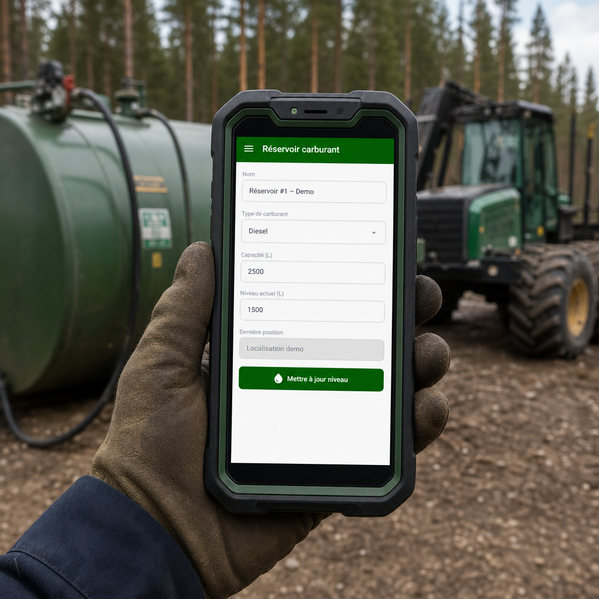

Sur un chantier forestier, le carburant fait partie des plus grosses dépenses de la saison. Une abatteuse, un porteur, une débusqueuse : ça boit du diesel du matin au soir. Et pourtant, c'est souvent le poste le moins bien documenté de toute l'opération.
La scène se répète partout. L'opérateur fait le plein au réservoir mobile, griffonne un chiffre approximatif sur un bout de carton, puis retourne à sa machine. Le soir, quelqu'un essaie de reconstituer la journée de mémoire. À la fin du mois, la facture du fournisseur arrive et ne concorde pas tout à fait avec ce qui a été noté. Et personne ne sait vraiment où est passé l'écart.
Ce flou-là coûte cher. Pas seulement en litres perdus, mais en temps de bureau, en décisions prises à l'aveugle et en factures qu'on n'arrive pas à valider. La bonne nouvelle, c'est qu'avec MobileLogix, le suivi du carburant tient dans le téléphone : une photo, quelques touches, et le plein est classé.
Pourquoi le suivi manuel du carburant échoue presque toujours
Le problème, ce n'est pas que les opérateurs sont négligents. C'est que la méthode papier est faite pour échouer dans le bois :
- Les pleins se font dehors, souvent avec des gants, dans la poussière ou sous la pluie.
- Le carton finit graisseux, illisible, ou perdu au fond de la cabine.
- Le chiffre est noté de mémoire, des heures plus tard.
- Personne ne note avec certitude quelle machine a été ravitaillée, ni par quel réservoir.
- Le bureau reçoit des données partielles, qu'il faut ensuite réconcilier à la main.
Au bout du compte : des coûts de carburant flous, des écarts qu'on découvre trop tard, et aucune façon simple de repérer une machine qui consomme anormalement.
Le plein se saisit sur place, en quelques touches
Voici comment MobileLogix change la routine. Au moment du ravitaillement, l'opérateur sort son téléphone ou sa tablette et prend une photo du compteur. Ensuite, en quelques touches :
- Il choisit l'équipement ravitaillé dans la liste de ses machines.
- Il indique de quel réservoir vient le carburant.
- Il entre le nombre de litres et la lecture du compteur.
La photo, les valeurs et les choix restent attachés au ravitaillement, dans le carnet de bord du quart. Le tout prend quelques secondes, gants aux mains, sans crayon ni carton.
Du réservoir à l'équipement : la traçabilité complète
Côté ForestLogix, au bureau comme en cabine, le carburant n'est pas qu'une photo isolée. C'est une chaîne complète, du réservoir jusqu'à la machine. Chaque morceau a son rôle :
- La photo du compteur sert de preuve visuelle du plein.
- L'équipement et le réservoir, choisis par l'opérateur, rattachent le plein au bon actif, sans devinette au bureau.
- Le ravitaillement regroupe les litres, l'équipement, la date et l'opérateur : une ligne propre dans le carnet de bord du quart.
- L'envoi différé transmet le tout au retour du réseau, pour que la donnée soit disponible au bureau sans que rien ne se perde.
Les réservoirs aussi sont enregistrés dans le système. Un camion-citerne, un réservoir fixe, un baril sur le site : chacun devient un actif connu, qu'on sélectionne au moment du plein. On sait donc d'où vient le carburant, autant que dans quelle machine il s'en va.
Ce que ça change pour Mélanie, Léo et Robert
Pour Mélanie, la coordonnatrice de travaux, le lundi matin n'est plus une chasse au trésor. Elle ouvre son écran et voit la consommation par chantier et par équipement, photos à l'appui. Fini les trois appels aux opérateurs pour reconstituer la fin de semaine.
Pour Léo, l'entrepreneur, c'est une question de contrôle. Il sait quelle machine consomme combien, jour après jour. Quand une débusqueuse se met à boire deux fois plus que d'habitude dans la même semaine, ça saute aux yeux. Un bris qui s'annonce, une fuite, un usage anormal : il le voit venir avant la facture, pas après.
Pour Robert, le dirigeant, la donnée carburant a une deuxième vie. Une fois propre et classée, elle se compare à la facture du fournisseur, secteur par secteur : les chiffres concordent ou ils ne concordent pas, et on le voit tout de suite. Elle sert aussi à chiffrer les prochains contrats sur du réel plutôt qu'au pifomètre. Une donnée fiable au départ, c'est une décision solide à l'arrivée.
Un exemple concret, un mardi de coupe
Prenons un mardi ordinaire. Le camion-citerne arrive sur le chantier en matinée. L'opérateur du porteur fait son plein, sort son appareil, photographie le compteur. Il tape sur son porteur dans la liste, choisit le camion-citerne comme source, entre les litres. Une quinzaine de secondes, gants aux mains, c'est réglé.
En après-midi, même chose pour l'abatteuse, à l'autre bout du parterre de coupe. L'opérateur sélectionne sa machine, saisit son plein, et passe à autre chose.
Le réseau cellulaire est absent toute la journée? Aucun problème. Les deux ravitaillements et leurs photos restent sur l'appareil. Le soir, en revenant vers le camp, l'appareil capte un signal et tout remonte vers le bureau sans que personne ait à y penser. Le mercredi matin, Mélanie a déjà les deux pleins, photos comprises, classés au bon chantier et au bon équipement. Personne n'a eu à reconstituer quoi que ce soit.
Ce que l'outil ne fait pas (et pourquoi on le dit)
On pourrait être tentés d'en promettre plus. On ne le fera pas. Voici les limites, dites franchement :
- Ce n'est pas une jauge connectée branchée sur le réservoir. Les niveaux et les pleins sont saisis par une personne, pas par un capteur.
- Ce n'est pas un système de détection de fraude. L'outil documente, il ne juge pas.
- Ce n'est pas de la synchronisation en temps réel. La photo remonte au bureau quand le réseau revient.
- Ce n'est pas branché sur les grandes pétrolières. Les factures de fournisseurs se saisissent séparément.
Pourquoi insister là-dessus? Parce qu'un outil forestier crédible, c'est un outil qui fait exactement ce qu'il annonce. C'est aussi comme ça qu'on garde la confiance de nos clients sur le long terme.
Conçu pour le vrai terrain
Le ravitaillement arrive souvent loin de tout, au fond d'un parterre de coupe sans une barre de réseau. C'est prévu. La photo et les données sont d'abord gardées sur l'appareil, puis envoyées vers le stockage infonuagique de G.A. Logix dès qu'une connexion revient, avec des tentatives répétées jusqu'à ce que ça passe. Rien ne se perd parce que le réseau était absent au moment du plein.
C'est le genre de détail auquel notre équipe québécoise tient beaucoup. On code pour du monde qui travaille dans la bouette et la poussière, pas dans un bureau climatisé branché sur la fibre optique.
Comment bien démarrer
Pour tirer le maximum du suivi par photo, quelques bonnes habitudes aident :
- Enregistrer ses équipements et ses réservoirs dans le système. Plus la liste est à jour, plus la sélection au moment du plein est rapide et juste.
- Prendre une photo du compteur bien cadrée et lisible. C'est la preuve visuelle du plein, et elle vaut son pesant d'or quand un chiffre est contesté.
- Saisir les litres et la lecture du compteur sur le coup, pendant que l'information est fraîche, plutôt que de remettre ça au soir.
- Jeter un œil de temps en temps, au bureau, pour s'assurer que les pleins sont bien rattachés au bon chantier et au bon équipement.
Rien de compliqué là-dedans. L'idée, c'est que la donnée se bâtisse pendant le travail normal, sans étape de bureau supplémentaire à la fin de la journée.
En résumé
- Une photo et quelques touches suffisent pour documenter un plein au complet.
- L'opérateur rattache chaque plein à la bonne machine et au bon réservoir, sur place.
- Chaque ravitaillement devient une ligne traçable, avec photo, dans le carnet de bord.
- Au bureau, la consommation se lit par chantier et par équipement, sans courir après personne.
- L'outil reste honnête sur ses limites : pas de jauge magique, pas de détection de fraude, pas de temps réel.
Vous voulez voir ça sur vos propres chantiers? Demandez votre démonstration gratuite. On vous montre, machine par machine, comment votre carburant peut enfin se suivre sans paperasse.